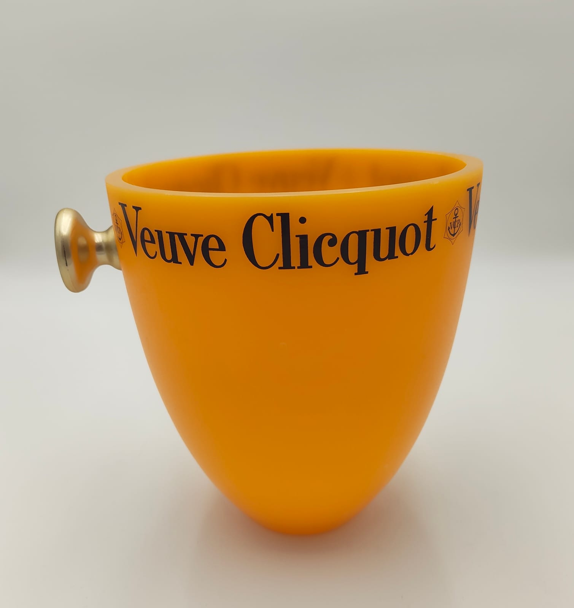
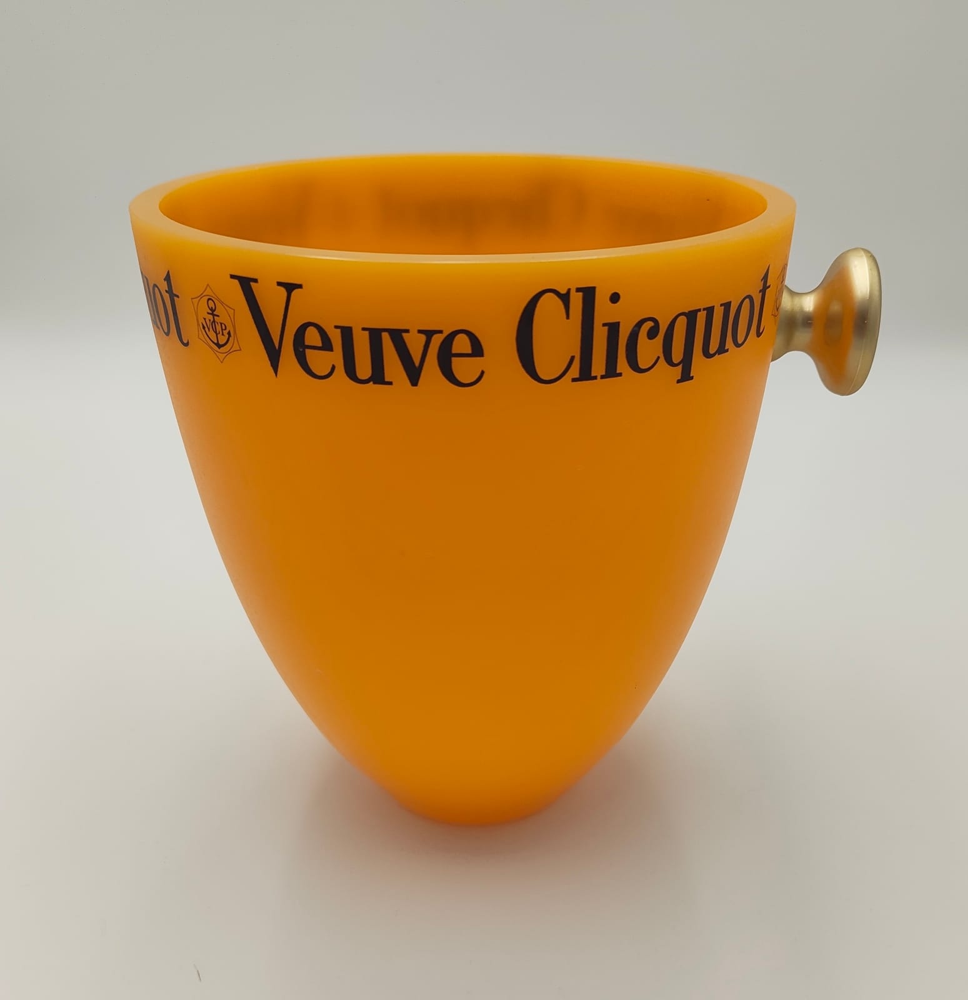
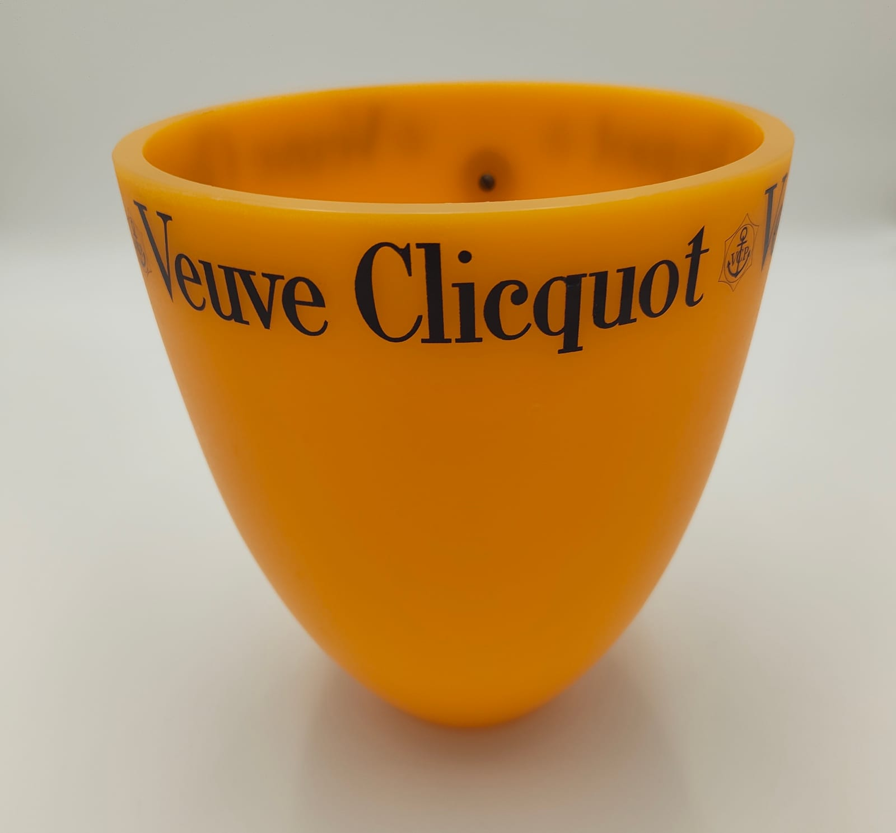
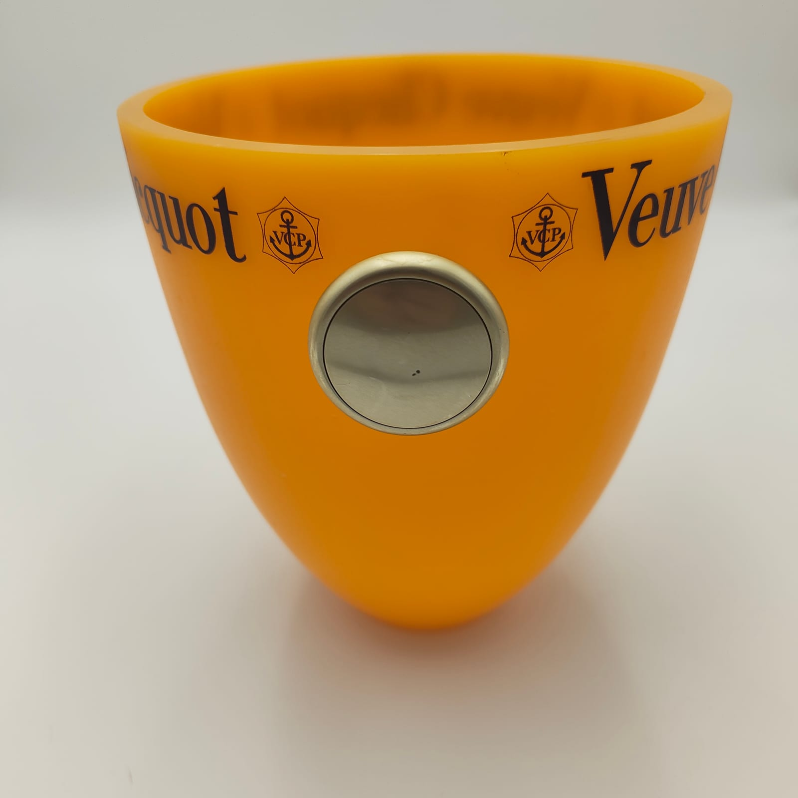
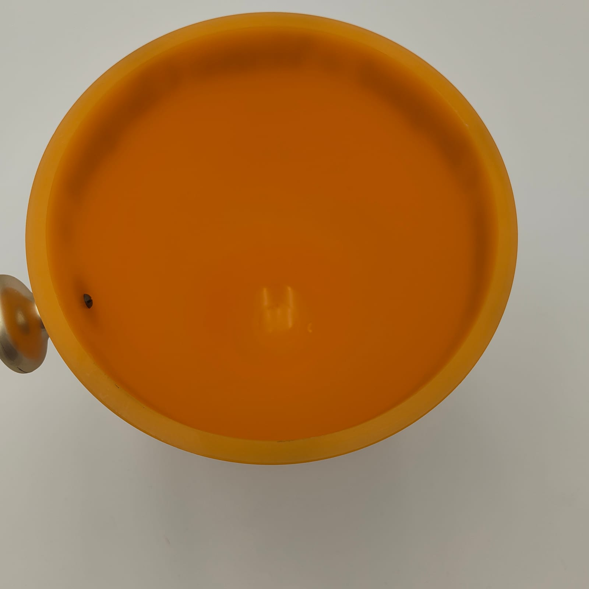
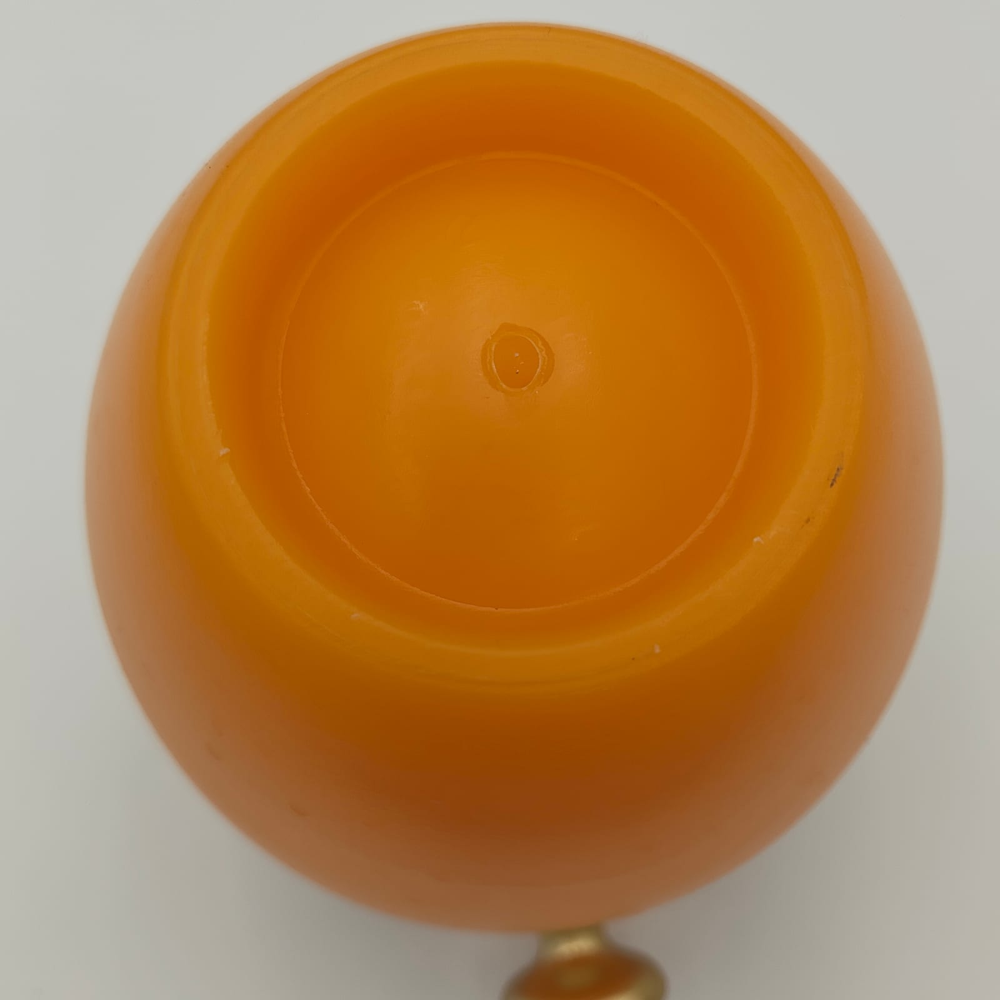
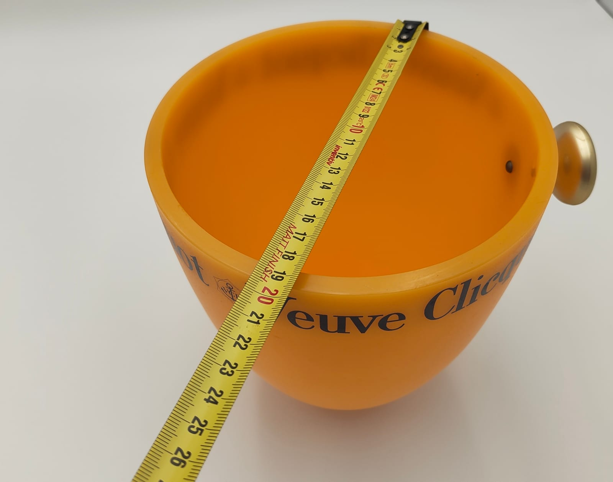
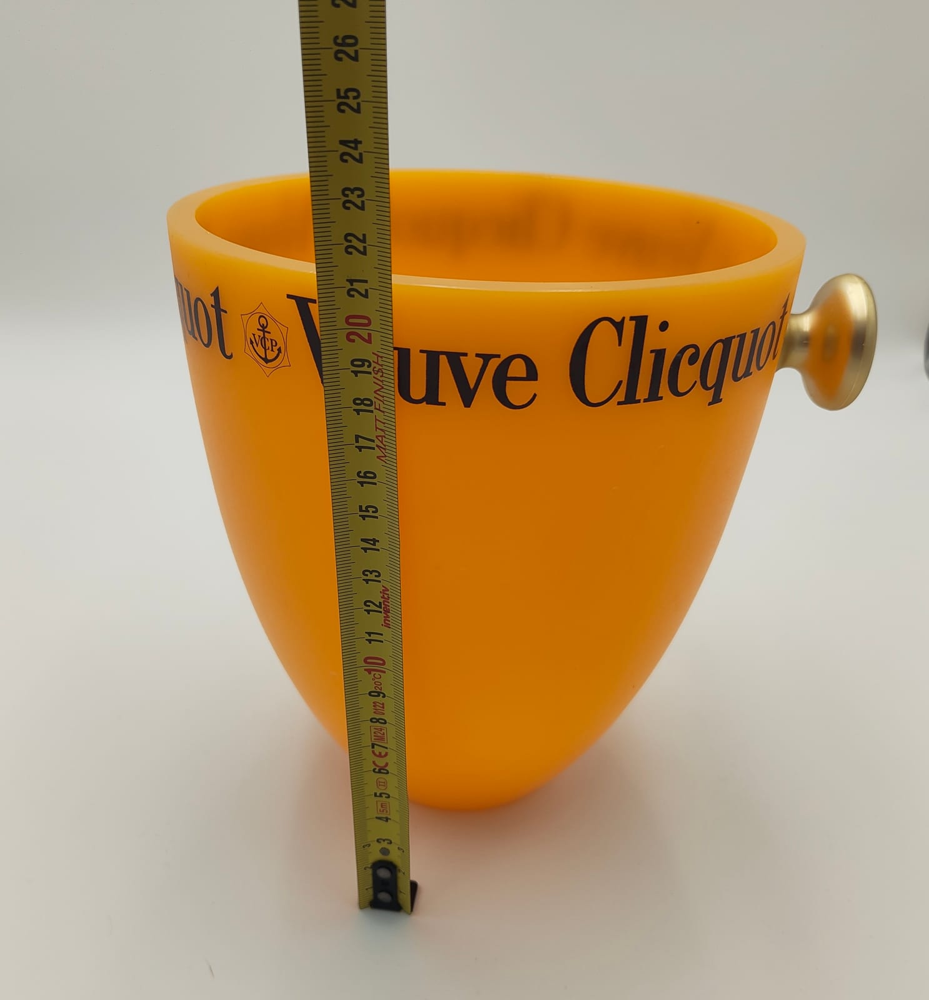

Veuve Clicquot Ponsardin Champagne Bucket, Orange, France
325€
No online payment: we reply personally to confirm availability, shipping and payment.
Few Champagne houses own a colour as completely as Veuve Clicquot, and this bucket turns that yellow-orange into the object itself. The deep, tapering ovoid body is moulded in a translucent orange material that glows when light passes through it, banded below the rim by bold black serif lettering alternating with the historic V.C.P. anchor — the Ponsardin emblem that identifies the Maison rather than the maker of the bucket. A single gold-tone knob handle provides the only metal accent, keeping the silhouette clean and almost sculptural. A distinctive piece of 20th-century French Champagne barware, as striking on a sideboard as it is in service.
- Maker
- Produced for Veuve Clicquot Ponsardin (manufacturer unmarked)
- Origin
- France
- Period
- 20th century
- Materials
- Translucent moulded synthetic body (often described as acrylic in comparable examples; no material mark on this piece), gold-tone metal knob handle
- Dimensions
- Height approx. 22 cm, rim diameter approx. 20 cm
- Marks & signatures
- Printed black 'Veuve Clicquot' lettering alternating with the V.C.P. anchor emblem around the upper body; no manufacturer's mark
- Condition
- Good vintage condition. Colour even and printed lettering crisp; light surface marks and small scuffs from use, mainly around the rim and the foot; interior with light marks; handle with light wear to the finish (see photographs).